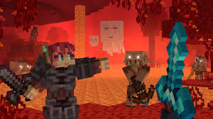
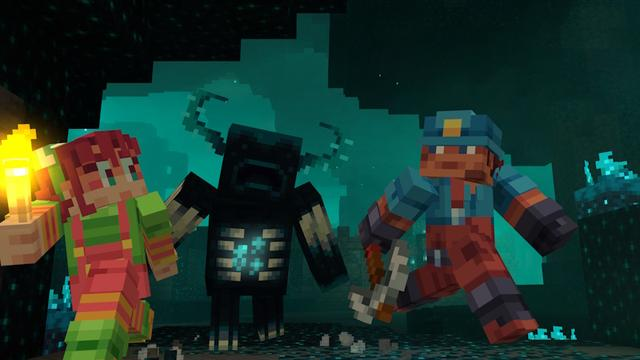

Actions & Stuff is currently one of the most popular Minecraft Bedrock resource packs. It completely upgrades the game's visuals and animations, making Minecraft feel smoother, more modern and much more immersive. The pack improves player animations, mob behavior, combat effects, visual details and many other parts of the game while still keeping the classic Minecraft style players love.
What Is Actions & Stuff?
Actions & Stuff is a premium quality Minecraft Bedrock resource pack designed to improve the overall gameplay experience. It introduces new animations, smoother movements, enhanced visual effects and many small details that make the game feel alive. Many players consider it one of the best Bedrock packs available today.

Main Features
- ✔ Improved Player Animations
- ✔ Better Combat Effects
- ✔ Enhanced Mob Movements
- ✔ More Realistic Gameplay Feel
- ✔ Smooth Visual Experience
- ✔ Bedrock Edition Compatible
- ✔ Better Third Person Animations
- ✔ Constant Updates
Why Players Love Actions & Stuff
Minecraft Bedrock players love this pack because it improves the game without changing its identity. Everything feels smoother, more polished and more enjoyable while still looking like Minecraft. The improved animations make exploration, combat and survival much more immersive. Even small actions feel better than vanilla Minecraft.
Whether you're playing survival, multiplayer, adventure maps or simply exploring your world, Actions & Stuff makes the experience look and feel significantly better.

Installation Guide
1. Download the Actions & Stuff Resource Pack using the button below.
2. Open the downloaded file.
3. Import the pack into Minecraft Bedrock Edition.
4. Activate the pack inside Global Resources or World Settings.
5. Launch your world and enjoy improved animations.
📥 Download Actions & Stuff
Upgrade Minecraft Bedrock with one of the best animation and visual enhancement packs available today.
Download PackCredits: All rights belong to the original creators of Actions & Stuff Resource Pack. Hero Verse only provides information, reviews and access links for educational purposes. Please support the original developers and creators.